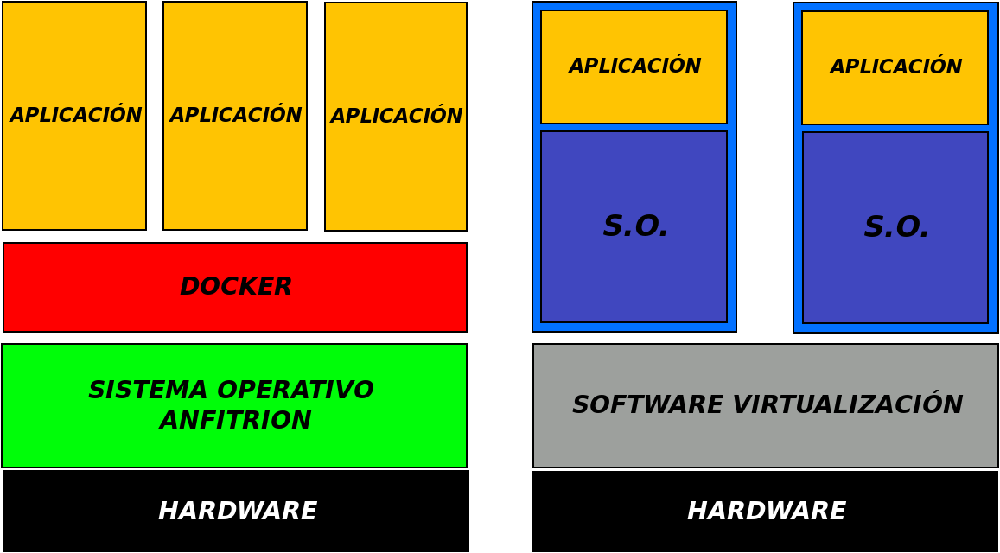

Practicas de OwnCloud Rasperry Pi
Practicas instalación y configuración del OwnCloud en Rasperry Pi
Instalación y configuranción de servidor OwnCloud en la Rasperry Pi para poder crear un servidor en el que almacenar archivos para acceder a ellos desde otro equipo.
Practicas de FTP en la Rasperry Pi
Practicas configuración del FTP en Rasperry Pi
Configuranción del FTP en la Rasperry Pi para poder transferir archivos desde la Rasperry Pi.
Practicas de Uso remoto Rasperry Pi
Practicas configuración del SSH en Rasperry Pi
Configuranción del SSH en la Rasperry Pi para poder hacer un uso remoto de ella.
Practicas de Docker
Practicas Docker e información sobre ello.
Página web hecha en clase sobre docker.
- PÁGINA WEB
- 
Primer Tema de Raspberry
Practicas Raspberry Pi 1
Aquí están mi primeras páginas con Raspberry Pi.